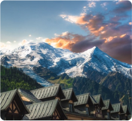
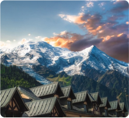

POPULAR DESTINATIONS
Hello Switzerland!

Our Swiss adventure story
Location location location! Zermatt Switzerland offers majestic landscapes that cannot be seen elsewhere. The Matterhorn for example. This peak is a sight to behold and seeing it up close is more magical than we've ever imagined. 'Want to enjoy a nice and cozy Swiss breakfast! Well, Zermatt will never fail you.
 

As one of the alpine countries, landlocked Switzerland with her mountains has to compete not only with her neighbours but with other destinations. There are, e.g., no coastal resorts.
The advantage is that tourism in Switzerland benefits from a large diversity of beautiful landscapes in a relatively small space.
The advantage is that tourism in Switzerland benefits of a large diversity of beautiful landscapes in a relatively small space, offering many possibilities for various activities all the year round, in all seasons, although primarily in summer and winter. The offers of nature as well as culture are manifold, but unfortunately price levels throughout the country are high, and this can discourage many people from visiting. Despite this major drawback, millions of visitors from all over the world arrive every year.
Highlights
The barns built in the 13th and 14th century

Riding the amazing Bernina Express

The Matterhorn glacier cable car ride
Disclaimer
The COVID-19 pandemic has dealt a severe blow to the tourism business in Switzerland. Although it is a minor position in the Swiss export balance, it is nevertheless of considerable importance for those regions of the country that attract domestic and foreign visitors. As a consequence of the lockdown measures, combined with close borders and travel bans, tourism collapsed and only briefly and partly recovered in summer. Its future is uncertain and depends on people's (future guests') attitudes and decisions as much as on the economy, political measures and, of course, the progress of the pandemic.